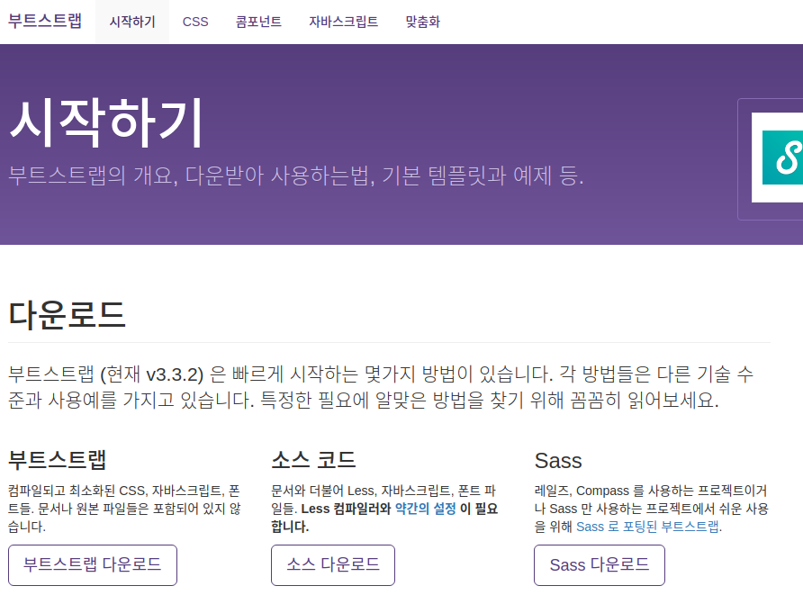

부트스트랩(Bootstrap)은 웹사이트를 쉽게 만들 수 있게 도와주는 HTML, CSS, JS 프레임워크입니다. 하나의 CSS로 휴대폰, 태블릿, 데스크탑까지 다양한 기기에서 작동합니다. 다양한 기능을 제공하여 사용자가 쉽게 웹사이트를 제작, 유지, 보수할 수 있도록 도와줍니다.
부트스트랩은 원래 'Twitter Blueprint' 라는 이름으로 트위터의 직원인 Mark Otto와 Jacob Thornton이 개발한 프로젝트였습니다.
당시 트위터에서는 여러 개발자들이 각기 다른 인터페이스를 사용하여 공동작업을 진행했기 때문에 각각의 디자인과 소스가 상이하여 정형화 되지 않아 코드의 통합 및 유지·관리가 어려웠습니다.
두 사람은 이 문제점을 해결하기 위해 부트스트랩의 초기 버전인 Twitter Blueprint를 개발하게 되었고, 이후 점차 많은 개발자들이 프로젝트에 투입되며 하나의 프레임워크로 발전하게 되었습니다.
'부트스트랩'이라는 이름으로는 2011년에 깃허브에 오픈소스로 발표되면서 불리기 시작했고, 2012년에 부트스트랩 2, 2013년에는 부트스트랩 3가 발표되었습니다. 지금도 여러 개발자들에 의해 꾸준히 발전되고 있습니다.
현재 부트스트랩 공식 홈페이지에 들어가보면 부트스트랩 3.3.2 버전을 다운받으실 수 있습니다.
